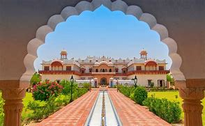

This majestic structure in Morbi is a Hindu temple which has statues of God Shiva, Goddess Kali as well as Lord Ram. Built by Thakor Saheb Sir Waghji, it is also a symbol of love. The name refers to Waghji’s first wife Manibai.